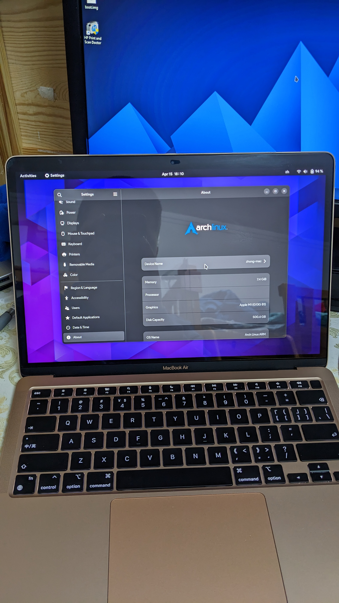

Apple Macbook Air M1 (apple-MacBookAir10,1)
|
 MacBook Air M1 2020 running Asahi Linux. | |
| Manufacturer | Apple |
|---|---|
| Name | MacBook Air |
| Codename | MacBookAir10,1 |
| Released | 2020 |
| Category | testing |
| Original software | macOS 11.0 |
| Hardware | |
| Chipset | Apple M1 |
| CPU | 3.2 GHz 8cores (4× Apple Firestorm high-performance + 4× Apple Icestorm high-efficiency) |
| GPU | Apple G13G (either 7 or 8 cores dependent on base spec) |
| Display | 13.3", native 2560 x 1600 pixels (16:10, 227 ppi) IPS |
| Storage | 128GB (education only), 256GB, 512GB, 1TB, 2TB |
| Memory | 8/16 GB LPDDR4 @ 4266 MT/s |
| Architecture | aarch64 |
{kind=link}
| USB Networking |
Works
|
|---|---|
| Flashing |
Unavailable
|
| Touchscreen |
Unavailable
|
| Display |
Works
|
| WiFi |
Works
|
| FDE |
Partial
|
| Mainline |
Works
|
| Battery |
Works
|
| 3D Acceleration |
Works
|
| Audio |
Partial
|
| Bluetooth |
Works
|
| Camera |
Unavailable
|
| GPS |
Unavailable
|
| Mobile data |
Unavailable
|
| SMS |
Unavailable
|
| Calls |
Unavailable
|
| USB OTG / USB-C Role switching |
Unavailable
|
| NFC | |
| Accelerometer |
Unavailable
|
|---|---|
| Magnetometer | |
| Ambient Light | |
| Proximity | |
| Hall Effect | |
| Barometer | |
| Power Sensor | |
| Camera Flash | |
|---|---|
| Keyboard |
Works
|
| Touchpad |
Works
|
| USB-A | |
| HDMI/DP | |
| Ir TX | |
| Ir RX | |
| Stylus | |
| Haptics | |
| Ethernet | |
| FOSS bootloader |
Works
|
| Primary Bootloader |
Unavailable
|
|---|---|
| Secondary Bootloader |
Works
|
| Mainline |
Works
|
| Internal Storage |
Works
|
| SD card |
Unavailable
|
| USB Host |
Works
|
| USB Peripheral |
Works
|
| Display |
Works
|
| Keyboard |
Works
|
| Buttons |
Unavailable
|
|
This device is based on the Apple M1 SoC. See the Apple M1 page for common tips, guides and troubleshooting steps |
| Note: for active development see https://asahilinux.org/ . |
Contributors
- Asahi Linux Project
Users owning this device
- FlashTeens (Notes: Using Alpine Linux)
- Little-miss-synth (Notes: main laptop)
How to enter flash mode
for DFU mode: https://support.apple.com/en-gb/guide/apple-configurator-2/apdd5f3c75ad/mac
Bootloader
According to Asahi Linux's Wiki, m1n1 is the bootloader for Linux kernel booting.
m1n1 is the bootloader developed by the Asahi Linux project to bridge the Apple (XNU) boot ecosystem to the Linux boot ecosystem.
What it does(from their wiki)
- Initializes hardware
- Puts up a pretty logo
- Loads embedded (appended) payloads, which can be:
- Device Trees (FDTs), with automatic selection based on the platform
- Initramfs images (compressed CPIO archives)
- Kernel images in Linux ARM64 boot format (optionally compressed)
- Configuration statements
- Chainloads another version of itself from a FAT32 partition (if configured to do so)
Proxy mode enables a huge toolset of developer features, from reducing your Linux kernel test cycle to 7 seconds, to live hardware probing and experimentation, to a hypervisor capable of running macOS or Linux and tracing hardware accesses in real time while providing a virtual UART over USB.
m1n1 can load U-Boot as a payload.
U-Boot
| Note: You can look up their wiki for further informations. |
U-Boot is the default payload for m1n1 stage 2, and is used to provide a standard preboot environment familiar to AArch64 developers. External boot is not supported with the native Apple Silicon boot tooling, making U-Boot a hard necessity for providing a PC-like boot environment.
It is able to boot from any external media (USB drive, network, etc.) and users an execute any EFI binaries.
U-Boot Status
| Feature | Status |
|---|---|
| USB-A Ports | Not working due to their controller requiring firmware which we cannot redistribute. |
| USB devices | Certain USB devices which expose multiple functions (hubs with NICs, fancy gaming keyboards, etc.) do not work. |
| USB Hubs | Hubs with SD Card slots may cause U-Boot crash. |
Installation
See also
This device does currently boot and works to a degree, it has a actively developed Linux port (https://asahilinux.org/), as well as a somewhat working port by corellium that is claimed to be "completely usable" yet lacks any optimisation (https://www.corellium.com/blog/linux-m1)
Notes
| Note: An available GPU driver is ready for daily usage. |
Now you can install other Linux like Debian from this website:[Other].
To use Asahi's graphics driver, Update your kernel to their develop branch.